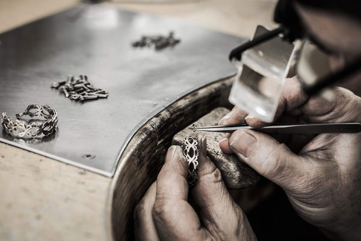

... y consideré la idea
de
crear joyas con formas que representaran los diferentes tipos celulares del cerebro.
... y consideré la idea
de
crear joyas con formas que representaran los diferentes tipos celulares del cerebro.
¿Quién soy?
Mi pasión por la Neurociencia y la orfebrería
Durante más de 40 años, he estado fascinado por las neuronas y las células gliales, dedicando mi actividad científica a desvelar las funciones de estas células en el Sistema Nervioso. Mis diseños se inspiran en estos trabajos.
Descubre más sobre mí
